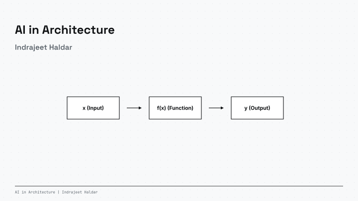
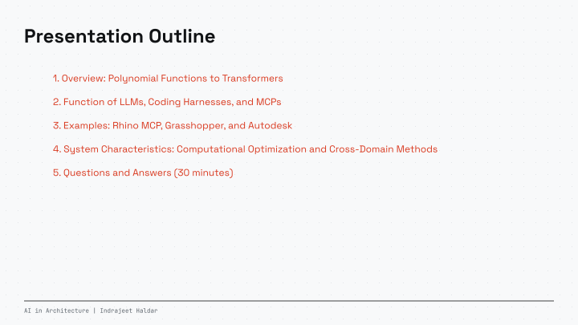
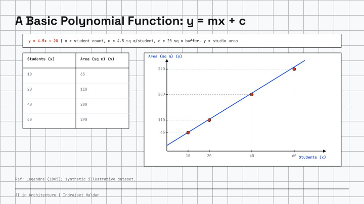
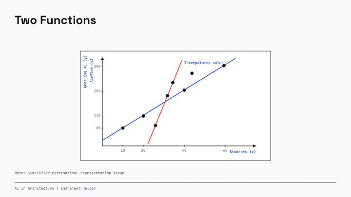
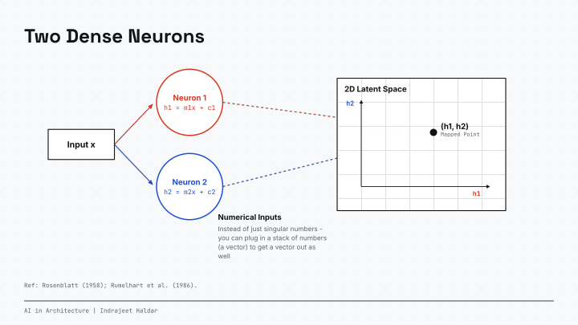
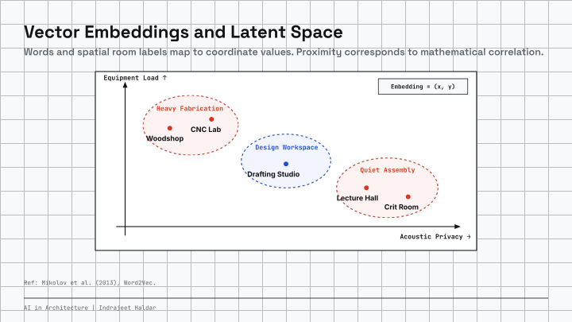
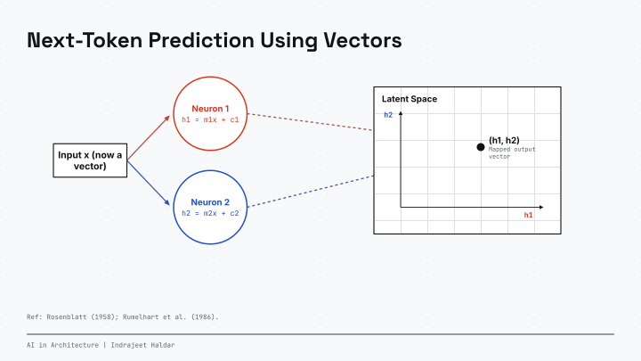
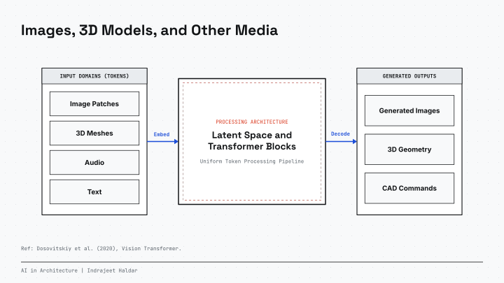
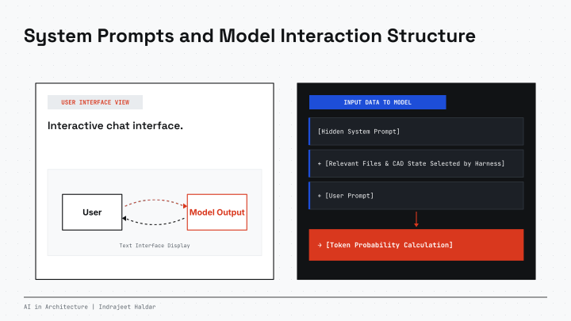
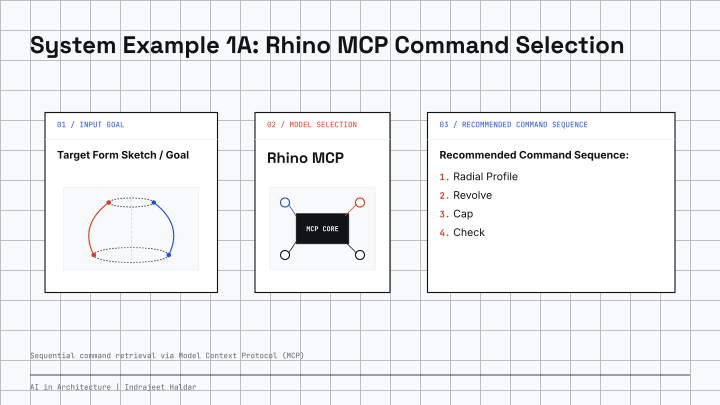
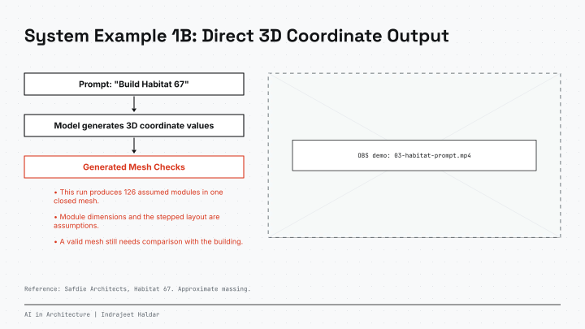
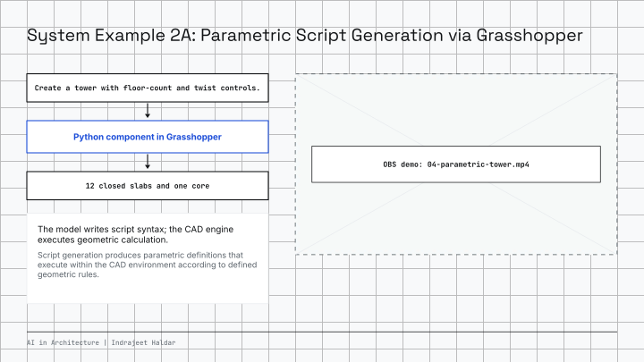
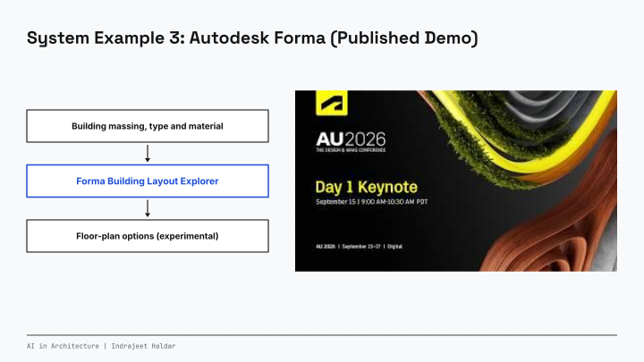
![Word Vectorization
Tokenization divides text into words. Vectorization assigns numerical coordinates to words.
AI in Architecture | Indrajeet Haldar
Appendix: Mathematical formulation of vectorization.
STEP 01
Raw Text
"Studio Room"
Raw Input String
Text Input
Natural language consists of character sequences. Numerical models process coordinate arrays rather than text strings.
tokenize
STEP 02 : SEGMENT
Tokenization
Token 1:
"Studio"
Token 2:
"Room"
Word Tokens
Text is divided into discrete word units. Each word corresponds to an index entry.
vectorize
STEP 03 : ENCODE
Vectorization
"Studio" →
[ 0.42, 0.85 ]
"Room" →
[ 0.78, 0.31 ]
Coordinate Vectors
Each word token corresponds to coordinates in a continuous vector space. Distance indicates statistical correlation.](web/slides/slide-06.svg)
![Sequential Next-Token Prediction (Autoregression and Recurrent Models)
Sequential models store preceding token states in a fixed memory vector.
PASS 01
Input Context:
"An apple is
_____
"
NEXT-TOKEN PROBABILITIES
red
45%
SELECTED
round
35%
sweet
20%
PASS 02
Input Context (fed 'red' back):
"An apple is red
_____
"
NEXT-TOKEN PROBABILITIES
and
55%
SELECTED
with
30%
.
15%
PASS 03
Input Context (fed 'and' back):
"An apple is red and
_____
"
NEXT-TOKEN PROBABILITIES
round
65%
SELECTED
juicy
25%
crisp
10%
AUTOREGRESSIVE LOOP:
Output tokens are iteratively appended to input sequences to generate subsequent tokens sequentially.
Ref: Hochreiter & Schmidhuber (1997).
AI in Architecture | Indrajeet Haldar](web/slides/slide-09.svg)
![Transformers: Conditional Probabilities Based on Context
CONTEXT A: FRUIT MARKET
Attention Weight
The
fruit
market
is
busy.
An
apple
is
_____
Prompt: "The fruit market is busy. An apple is _____"
NEXT-WORD PROBABILITIES P(w | Context)
red
50%
round
35%
fresh
15%
CONTEXT B: LAPTOP STORE
Attention Weight
The
laptop
store
is
busy.
An
Apple
is
_____
Prompt: "The laptop store is busy. An Apple is _____"
NEXT-WORD PROBABILITIES P(w | Context)
expensive
55%
aluminum
30%
fast
15%
Ref: Vaswani et al. (2017), Attention Is All You Need.
AI in Architecture | Indrajeet Haldar](web/slides/slide-10.svg)
![General Software Architecture: LLMs, Coding Harnesses, and MCPs
01 // OPERATOR
1. User
Operator providing prompt inputs and reviewing system outputs.
02 // ENVIRONMENT
2. Coding Harness
System Context and Execution Loop
Maintains state, prepares context windows, executes code, and processes returned data.
03 // MODEL
3. LLM
Probabilistic model generating text tokens, code, and tool commands.
Ref: Anthropic (2024), Model Context Protocol.
AI in Architecture | Indrajeet Haldar
04 // INTERFACE
4. MCP
Provides command interfaces and tool definitions to execute software operations.
05 // APPLICATION
5. Target Software
CAD and BIM software where geometry modifications execute via API or CLI commands.](web/slides/slide-13.svg)
![Live Demonstrations: CAD Automation via MCP
SECTION 03 // INTERACTIVE EXECUTION WORKFLOWS
Ref: Anthropic Model Context Protocol (MCP); McNeel RhinoAI Integration.
AI in Architecture | Indrajeet Haldar
DEMO 01 // GEOMETRY
Rhino 8 Model Context
Direct Viewport & Brep Control
Native Viewport API:
Inspect active layers, materials, and selected geometry.
Command Execution:
Automated NURBS curves, lofting, sweeps, and booleans.
Bi-Directional State:
Streams model bounding boxes and object GUIDs to LLM.
PROTOCOL: JSON-RPC (STDIO)
DEMO 02 // PARAMETRIC
Grasshopper Nodes
Algorithmic Graph Modification
Graph Inspection:
Reads active sliders, panel parameters, and cluster data.
ENGINE: RHINOCODE PYTHON 3
DEMO 03 // ECOSYSTEM
Autodesk & Interop
Cross-Platform Pipeline
Forma
PIPELINE: HYBRID CAD / BIM](web/slides/slide-14.svg)
![Installing the Rhino MCP
(mcneel.github.io/RhinoAI)
SETUP GUIDE // RHINO 8 AND CODEX
Ref: McNeel RhinoAI (https://mcneel.github.io/RhinoAI/); Anthropic Claude Desktop MCP Documentation.
AI in Architecture | Indrajeet Haldar
STEP 01 //
ENVIRONMENT
Rhino 8
Use current Rhino 8 on an Apple Silicon Mac.
CLI / COMMAND
# In Rhino 8 command line:
SystemInfo
# Check the Rhino version
Tested here: Rhino 8.36 on Apple Silicon.
STEP 02 //
PACKAGE
Install MCP Server
Install Rhino-MCP-Platform from Rhino Package Manager.
RHINO COMMAND
PackageManager
# Search for:
Rhino-MCP-Platform
Restart Rhino after the package installs.
STEP 03 //
CONFIG
Configure Harness
In MCPConnect, click Install next to Codex.
CODEX CONNECTION
MCPConnect
Restart Codex to load the Rhino tools.
STEP 04 //
EXECUTE
Verify Connection
Launch MCP bridge inside Rhino and prompt the LLM.
RHINO 8 VERIFICATION
# Inside Rhino 8:
MCPStart
# Prompt: 'Draw a torus'
Check: read the model, then create one torus.](web/slides/slide-15.svg)
![System Example 2B: Airflow in a 2D Slice
Adapt existing LBM code into a Grasshopper tool for a 2D flow slice.
01 // INPUT PARAMETERS
Building Slice
Closed footprints, inlet speed, grid size and viscosity.
Compare two layouts with the same flow settings.
02 // CODE ADAPTATION
Adapt Existing Code
•
Ports D2Q9 / TRT from GitHub
•
Runs a small Python solver
// LBM time step
for each step {
collide_and_stream()
apply_boundaries()
}
03 // GENERATED TOOL
2D Flow Field
Teaching model. Check stability before comparing layouts.
OUTPUT METRICS:
•
Relative speed
•
Velocity vectors
•
Wake pattern
AI in Architecture | Indrajeet Haldar](web/slides/slide-23.svg)
![System Example 2C: Extracting Regulatory Constraints for Grasshopper Models
Function:
Models extract quantitative constraints from regulatory texts to define parametric building envelopes.
[INPUT 01]
Toronto RD Zoning Rules
Selected Toronto clauses. Fictional 15 x 36 m lot.
[DATA PROCESSING 02]
Text Parsing
Check each clause. Declare the zone, setbacks and coverage assumptions.
[OUTPUT 03]
Grasshopper 3D Model
Change lot depth to 30 m. Recompute setbacks and house size.
Format: Unstructured PDF / Text
Structured Data Extraction
3D Parametric Volume
Process: Regulatory Document → Parameter Extraction → Parametric Boundary Generation
AI in Architecture | Indrajeet Haldar](web/slides/slide-25.svg)

![Cross-Domain Structural Mapping
Large models contain text from multiple disciplines. Mathematical formulations from one field can be transferred to problems in other fields.
SOURCE DOMAINS // FIELD A
Epidemiology
Kermack & McKendrick, 1927
Game Theory / Consensus
DeGroot, 1974
Mathematical abstractions for network state transitions & opinion dynamics.
STRUCTURAL MAPPING
(Operator Selection and Input)
Cross-domain model mapping
TARGET DOMAIN // FIELD B
Information Propagation
Across 1,000,000+ Graph Nodes
Documented Implementations
• Network Propagation Formulations (Haldar 2022)
• Graph Network Library (Haldar 2023)
STRUCTURE: Application of epidemic and consensus equations to network graph architectures.
AI in Architecture | Indrajeet Haldar](web/slides/slide-30.svg)
![Model Utility: General-Purpose Optimization and Retrieval
AI in Architecture | Indrajeet Haldar
Functional profile: Models perform automated iterative candidate generation and validation within defined constraints.
CASE STUDY 02 // CAD RECONSTRUCTION
CAD Code Reconstruction:
CadCraft and PartCraft
Parametric Code Generation:
CadCraft and PartCraft generate CAD script commands to reconstruct specified 3D target geometry.
Closed-Loop Geometry Verification: Model generates script -> CAD kernel executes geometry -> shape discrepancy is calculated -> script updates until geometric tolerance is reached.
SUMMARY:
Models operate as iterative search systems and structured retrieval engines when paired with deterministic execution environments.](web/slides/slide-31.svg)
![Reference Material and Technical Documentation
AI in Architecture | Indrajeet Haldar
Technical documentation, mathematics references, and visualizations of neural network functions.
VIDEO LECTURES // VISUAL MATHEMATICS
3Blue1Brown:
Neural Networks and Deep Learning
A video lecture series explaining matrix operations, gradient backpropagation, and geometric transformations in high-dimensional coordinate spaces.
Topics:
Weights, biases, activation functions, gradient descent, and loss surfaces.
Application:
Visual presentation of linear algebra and vector calculus operations.
Link to Series on YouTube:
3Blue1Brown Neural Networks Playlist
youtube.com/playlist?list=PLZHQObOWTQDM4E-dwvbnQTiyKDO-y9T2t
MODEL ARCHITECTURE // REFERENCE CODE
Andrej Karpathy: Neural Networks: Zero to Hero
Code walkthrough showing implementation of basic neural networks and transformer models using Python and PyTorch.
Resource: karpathy.ai / YouTube
INTERACTIVE TOOLS // WEB VISUALIZATION
Transformer Explainer and Distill.pub
Web-based interactive diagrams demonstrating attention weight matrices, token transformations, and dimensional projections.
Resource: poloclub.github.io/transformer-explainer](web/slides/slide-32.svg)
![Technical Appendices
Mathematical definitions, optimization procedures, and training architectures.
AI in Architecture | Indrajeet Haldar
APPENDIX A // VECTOR EMBEDDINGS
Word Vectorization Mathematics
Vector space projection, embedding lookup matrices E in R^(V x d), and vector similarity calculation using cosine distance.
Slide 25 ->
APPENDIX B // OPTIMIZATION AND PARAMETER UPDATES
Loss Functions and Parameter Updates via Backpropagation
Cross-entropy loss calculation, gradient computation across model weights via the calculus chain rule, and parameter updates using AdamW.
Slide 26 ->
APPENDIX C // POST-TRAINING ENVIRONMENTS
Reinforcement Learning Environments in Model Training
Training feedback mechanisms: human evaluations (RLHF), model-based evaluations (RLAIF), and deterministic code verification (RLVR).
Slide 27 ->](web/slides/slide-34.svg)
![AI in Architecture | Indrajeet Haldar
Appendix A: Word Vectorization Mathematics
Mathematical projection of discrete symbolic tokens into continuous coordinate spaces.
01 // ONE-HOT ENCODING
Sparse Vector Representation
For vocabulary size |V| (e.g. 50,000 words), each token corresponds to an indicator vector:
x_i = [0, 0, ..., 1, ..., 0]^T ∈ {0, 1}^|V|
Geometric Properties:
All distinct one-hot vectors are mutually orthogonal:
x_i · x_j = 0 (for all i ≠ j)
This representation assigns equal geometric distance between all distinct word pairs.
02 // EMBEDDING MATRIX
Linear Matrix Lookup
An embedding matrix W_e ∈ ℝ^(d × |V|) projects sparse indicator vectors into d-dimensional coordinate space (e.g. d = 768 or 4096):
e_word = W_e · x_word = W_e[:, index]
Coordinate Properties:
Each token corresponds to a coordinate vector of real values:
e_studio = [ +0.42, +0.85, -0.19, ... ]
Embedding matrix values are adjusted during training via gradient descent.
03 // DISTANCE METRIC
Cosine Distance Metric
Vector orientation similarity is calculated using normalized dot products:
cos(u, v) = (u · v) / (||u|| ||v||)
Vector Operations:
Vector translations correspond to relational shifts:
v_king - v_man + v_woman ≈ v_queen
In domain-specific vocabulary spaces:
v_studio - v_residential + v_commercial ≈ v_office
MATHEMATICAL SUMMARY:
Vectorization converts text symbols into numeric vectors. Geometric distance corresponds to statistical correlation, and vector differences correspond to semantic relationships.](web/slides/slide-35.svg)
![AI in Architecture | Indrajeet Haldar
Appendix B: Loss Functions and Parameter Optimization
Quantifying token prediction error and updating parameter values via gradient descent.
01 // LOSS FUNCTION
Cross-Entropy Loss (L)
The model outputs raw logits z. The softmax function calculates predicted probability values:
p_i = exp(z_i) / Σ_j exp(z_j)
Negative Log-Likelihood:
For target token index y_true, the error value is defined as:
L = -log( p_target )
• If p_target = 0.99 → L ≈ 0.01 (Low error value)
• If p_target = 0.01 → L ≈ 4.60 (High error value)
02 // CHAIN RULE OF CALCULUS
Gradient Calculation (∂L/∂W)
Backpropagation applies the chain rule to calculate the partial derivative of loss with respect to parameter W:
∂L / ∂W_l = (∂L / ∂a_l) · (∂a_l / ∂z_l) · (∂z_l / ∂W_l)
Gradient Flow:
Gradients propagate backward from output logits through attention and feed-forward layers to the input embedding matrix.
03 // PARAMETER UPDATES
Gradient Descent Optimization (AdamW)
In standard gradient descent, parameters update proportionally to the negative gradient scaled by learning rate η:
W ← W - η · (∂L / ∂W)
AdamW applies three adjustments:
1. First moment vector: tracks the exponential moving average of gradients.
2. Second moment vector: divides steps by gradient variance for adaptive per-parameter updates.
3. Weight decay: applies proportional parameter shrinkage to regularize weights.
OPTIMIZATION SUMMARY:
Model training is an iterative numerical procedure: forward execution produces logits, cross-entropy calculates loss, backpropagation computes partial derivatives, and AdamW updates parameters to minimize loss.](web/slides/slide-36.svg)
![AI in Architecture | Indrajeet Haldar
Appendix C: Reinforcement Learning Environments in Model Training
Training feedback methodologies: human feedback (RLHF), model-based feedback (RLAIF), and deterministic execution verification (RLVR).
TYPE 1 // HUMAN PREFERENCE
RLHF: Human Feedback
Procedure:
Human annotators evaluate and rank model outputs. A reward model r_θ(x, y) is fitted to these rankings to score candidate text.
Optimization:
The policy π_θ updates to maximize reward score while limiting divergence from the base model:
max E[ r(x,y) - β·D_KL(π_θ || π_ref) ]
Characteristics: Requires human labor; subject to inter-annotator variance.
TYPE 2 // MODEL-ASSISTED PREFERENCE
RLAIF: Model Feedback
Procedure:
An auxiliary evaluation model scores and ranks candidate outputs according to specified criteria.
Iterative Refinement:
Models run automated critique loops to identify output inconsistencies without manual ranking data.
Characteristics:
Automated scaling; operates continuously without manual annotation bottlenecks.
TYPE 3 // VERIFIABLE EXECUTION
RLVR: Deterministic Execution Rewards
Procedure:
Candidate solutions are verified using external compilers and test runners:
r = 1 (Passes compiler and test assertions)
r = 0 (Execution error or incorrect test result)
Verification Environments:
• Formal proof checkers (LEAN, Isabelle)
• Code execution sandboxes and test suites
• Parametric geometry kernels and compilers
Supports search over reasoning traces with deterministic evaluation.
TRAINING SUMMARY:
Training models inside verifiable code and mathematical environments (RLVR) provides deterministic reward signals based on compilation and execution outcomes.](web/slides/slide-37.svg)